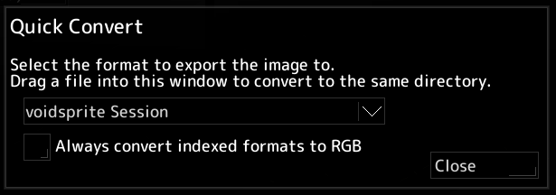

If you just want to quickly convert an image to a different format, you can use the Quick Convert feature. 
Quick Convert can be accessed from the voidsprite Launchpad navigation bar:
>
First, choose the desired output format from the dropdown menu.
Next, drag a supported image file you want to convert into the window.
The image will be converted to the selected format and saved with the same file name + the new extension.
For example, dragging in image.png and selecting as the output format will save it to image.png.ora.
Enabling the option will convert indexed images to RGB.
For example, dragging in an image with an indexed color model (like RPG Maker XYZ) and converting it to PNG will save it as an RGB PNG instead of an indexed one.